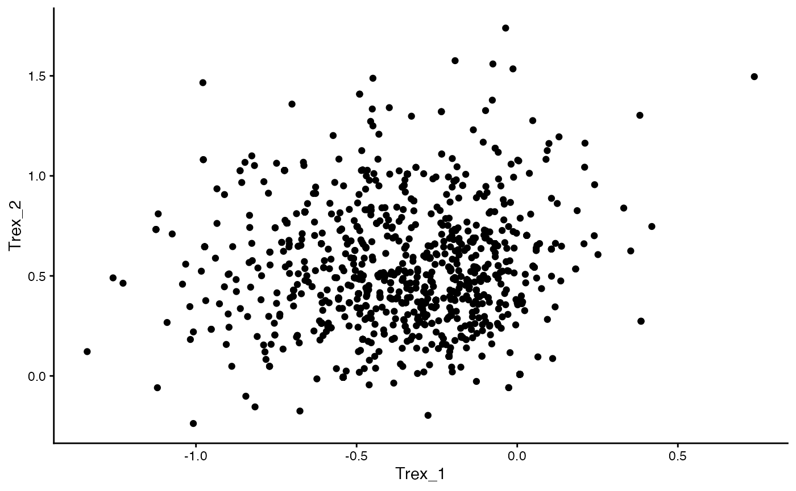
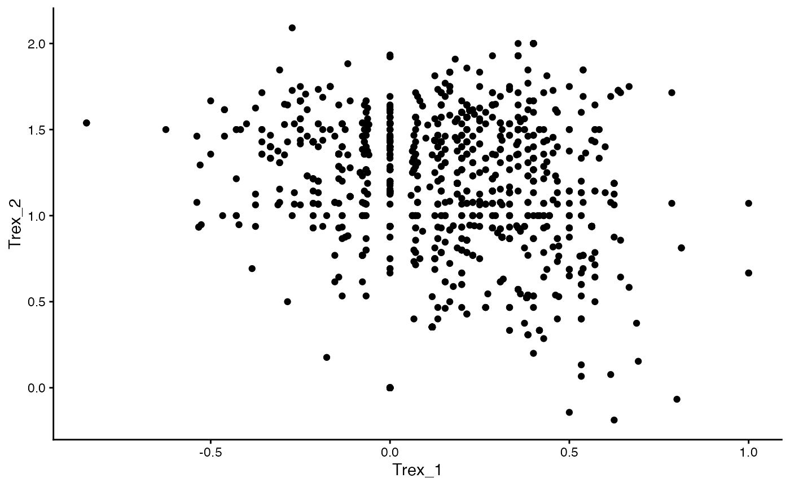
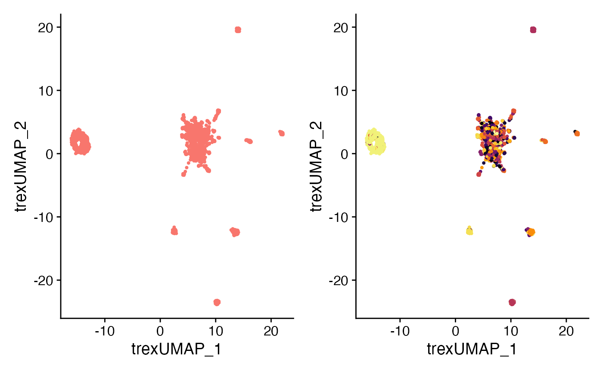
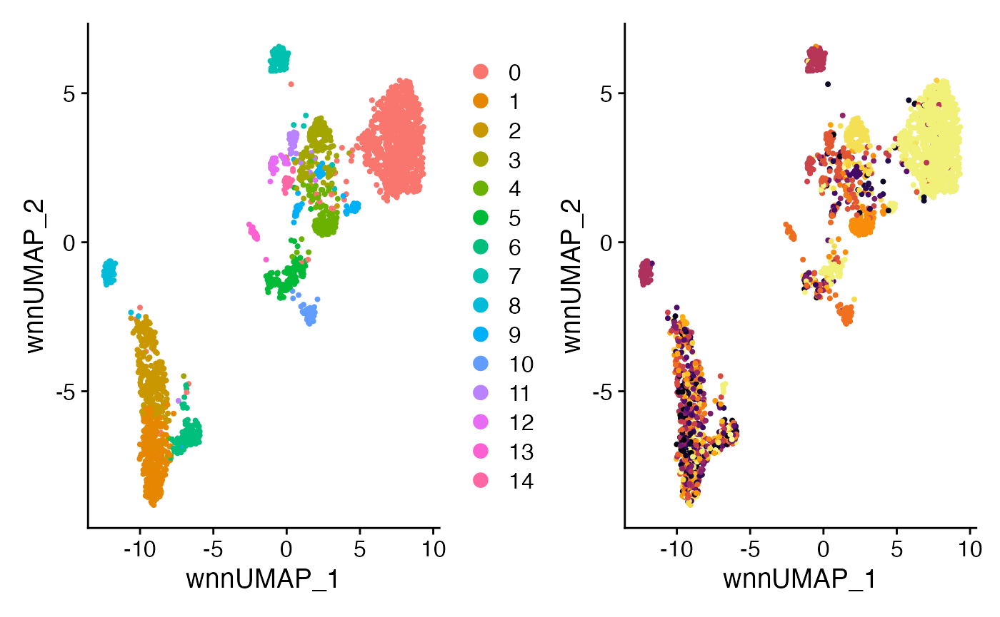
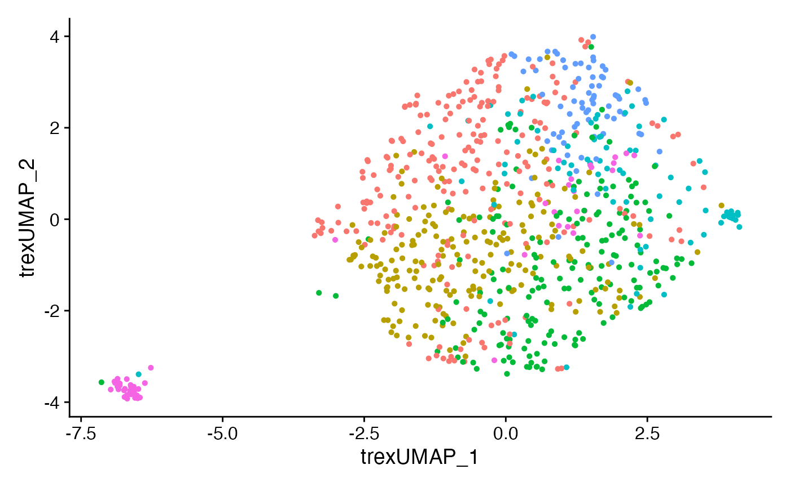
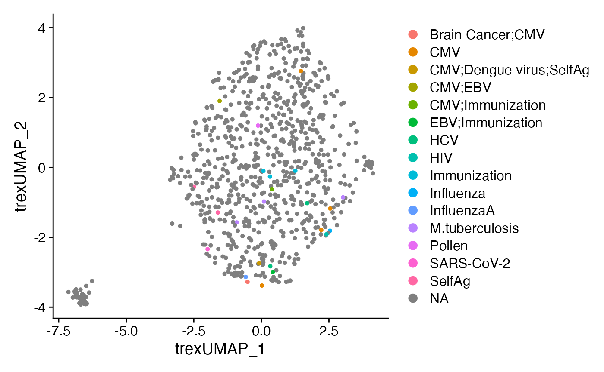
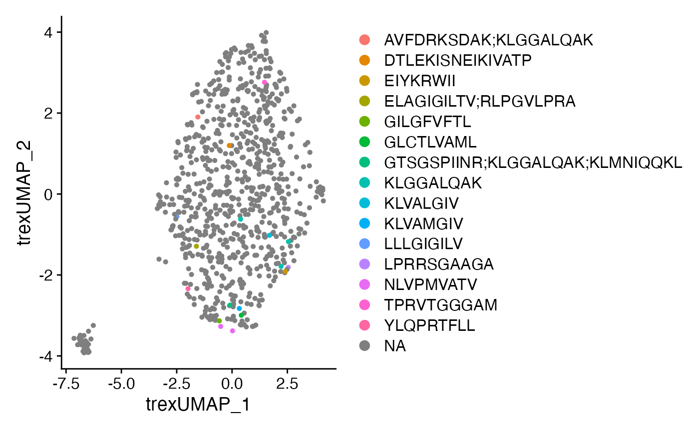
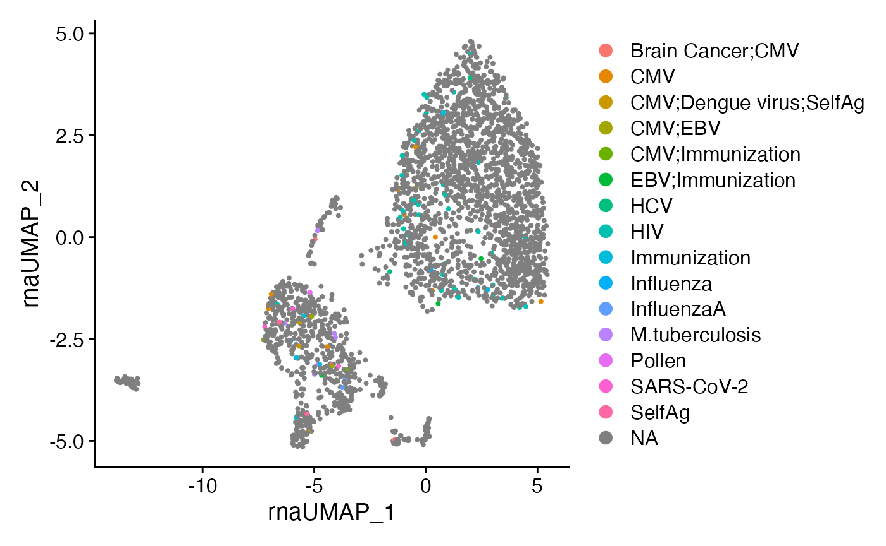

Combining Deep Learning and TCRs with Trex
Compiled: April 05, 2024
Source:vignettes/articles/Trex.Rmd
Trex.RmdGetting Started
The idea behind Trex is to combine TCR CDR3 amino acid information with phenotypic RNA/protein data to direct the use of single-cell sequencing towards antigen-specific discoveries. This is a growing field - specifically TESSA uses amino acid characteristics and autoencoder as a means to get a dimensional reduction. Another option is CoNGA, which produces an embedding using TCR and RNA with python. Trex was designed to make a customizable approach to this combined approach using R.
More information is available at the Trex GitHub Repo.
Installation
devtools::install_github("ncborcherding/Trex")The Data Set
To show the multiple options of Trex, the example data is derived from GSE167118, a cohort of CITE-seq data derived from severe COVID-19 patients. More information is available in the corresponding manuscript.
Formation of the Single-cell Object
Here is the basic workflow that was used to make the single-cell
object to use in the vignette. Notice there is a removal of TCR-related
CITE-seq data and RNA features (using the Trex function
quietTCRgenes()). As we are going to combine multimodal
data, both the GEX and CITE probes may cause bias in the weighted
output.
##################################
#scRNA/ADT loading and processing
#################################
tmp <- Read10X("~/Patient17/filtered_feature_bc_matrix")
Pt17 <- CreateSeuratObject(counts = tmp$`Gene Expression`)
#Removing TCR-specific antibody
adt_assay <- CreateAssayObject(counts = tmp$`Antibody Capture`[1:37,])
Pt17[["ADT"]] <- adt_assay
Pt17 <- subset(Pt17, subset = nFeature_RNA > 100)
Pt17 <- RenameCells(object = Pt17 , new.names = paste0("Pt17_", rownames(Pt17[[]])))
Pt17[["mito.genes"]] <- PercentageFeatureSet(Pt17, pattern = "^MT-")
#Filtering step
standev <- sd(log(Pt17$nFeature_RNA))*2.5 #cutting off above standard deviation of 2.5
mean <- mean(log(Pt17$nFeature_RNA))
cut <- round(exp(standev+mean))
Pt17 <- subset(Pt17, subset = mito.genes < 10 & nFeature_RNA < cut)
#Processing RNA
DefaultAssay(Pt17) <- 'RNA'
Pt17 <- NormalizeData(Pt17) %>%
FindVariableFeatures() %>%
quietTCRgenes() %>%
ScaleData() %>%
RunPCA(verbose = FALSE)
#Processing ADT
DefaultAssay(Pt17) <- 'ADT'
VariableFeatures(Pt17) <- rownames(Pt17[["ADT"]])
Pt17 <- NormalizeData(Pt17, normalization.method = 'CLR', margin = 2) %>%
ScaleData() %>%
RunPCA(reduction.name = 'apca')
##################################
#Processing and Adding Contig Info
##################################
contigs <- read.csv("~/Patient17/filtered_contig_annotations.csv")
clones <- combineTCR(contigs, samples = "Pt17", cells = "T-AB", filterMulti = TRUE, removeNA = TRUE)
Pt17 <- combineExpression(clones, Pt17, cloneCall="aa")
saveRDS(Pt17, file = "Trex_FullExample.rds")
###################################
#Making Example Data Set for Trex
#################################
meta <- Pt17[[]]
meta <- meta[sample(nrow(meta), nrow(meta)*0.1),]
trex_example <- subset(Pt17, cells = rownames(meta))
save(trex_example, file = "trex_example.rda", compress = "xz")Running Trex
maTrex Function
Trex has 2 major functions - the first being maTrex(),
which is the backbone of the algorithm and returns the encoded values
based on the selection of variables. Unlike runTrex()
below, maTrex() does not filter the input for only T cells
with attached TCR data. In addition, maTrex() is compatible
with the list output from the combineTCR() function from
the scRepertoire R
package, while runTrex() must be performed on a single-cell
object.
chains
- “TRA” for TCR Alpha Chain
- “TRB” for TCR Beta Chain
method
- “encoder” for a convolution neural network (CNN) based encoding.
- “geometric” for a geometric transformation
encoder.model
- “VAE” for a variational autoencoder
- “AE” for a traditional autoencoder
encoder.input
- “AF” to use Atchley factors
- “KF” to use Kidera factors
- “both” to use both Atchley and Kidera factors
- “OHE” for a One Hot Autoencoder
theta
If choosing the geometric transformation, what value of theta to use
(default is pi)
Trex_vectors <- maTrex(SeuratObj,
chains = "TRA",
encoder.model = "VAE",
encoder.input = "AF")## [1] "Calculating the encoding values..."
ggplot(data = as.data.frame(Trex_vectors), aes(Trex_1, Trex_2)) +
geom_point() +
theme_classic()
Trex_vectors2 <- maTrex(SeuratObj,
chains = "TRB",
method = "geometric",
theta = pi)## [1] "Performing geometric transformation..."
ggplot(as.data.frame(Trex_vectors2), aes(x = Trex_1, y = Trex_2)) +
geom_point() +
theme_classic()
runTrex
Additionally, runTrex() can be used to append the Seurat
or Single-cell Experiment object with the Trex vectors and allow for
further analysis. Importantly, runTrex() will remove single
cells that do not have recovered TCR data in the metadata of the
object.
SeuratObj <- runTrex(SeuratObj,
chains = "TRB",
encoder.model = "VAE",
encoder.input = "KF",
reduction.name = "Trex.KF")## [1] "Calculating the encoding values..."Using Trex Vectors
After runTrex() we have the encoded values stored under
“Trex…”. Using the Trex reduction stored in Seurat, we
can calculate the nearest neighbor and shared nearest neighbor indexes
and generate a UMAP.
#Generating UMAP from Trex Neighbors
SeuratObj <- RunUMAP(SeuratObj,
reduction = "Trex.KF",
dims = 1:30,
reduction.name = 'Trex.umap',
reduction.key = 'trexUMAP_')
#Trex UMAP
plot1 <- DimPlot(SeuratObj,
reduction = "Trex.umap") +
NoLegend()
plot2 <- DimPlot(SeuratObj,
group.by = "CTaa",
reduction = "Trex.umap") +
scale_color_viridis(discrete = TRUE, option = "B") +
theme(plot.title = element_blank()) +
NoLegend()
plot1 + plot2
We now can use this in a similar way as other single-cell modalities and calculate weighted nearest neighbor (WNN). To check out more on WNN, please read the Satija’s group paper. We will use the RNA, ADT protein levels, and Trex vectors for the WNN calculations.
SeuratObj <- FindMultiModalNeighbors(
SeuratObj,
reduction.list = list("pca", "apca", "Trex.KF"),
dims.list = list(1:30, 1:20, 1:30),
modality.weight.name = "RNA.weight")
SeuratObj <- RunUMAP(SeuratObj,
nn.name = "weighted.nn",
reduction.name = "wnn.umap",
reduction.key = "wnnUMAP_")
SeuratObj <- FindClusters(SeuratObj,
graph.name = "wsnn",
resolution = 0.6,
algorithm = 3, verbose = FALSE)
#WNN UMAP
plot3 <- DimPlot(SeuratObj,
reduction = "wnn.umap")
plot4 <- DimPlot(SeuratObj,
reduction = "wnn.umap",
group.by = "CTaa") +
scale_color_viridis(discrete = TRUE, option = "B") +
theme(plot.title = element_blank()) +
NoLegend()
plot3 + plot4
Comparing the outcome to just one modality
We can also look at the differences in the UMAP generated from RNA, ADT, or Trex as individual components. Remember, the clusters that we are displaying in UMAP are based on clusters defined by the weighted nearest neighbors calculated above.
SeuratObj <- RunUMAP(SeuratObj,
reduction = 'pca',
dims = 1:30,
assay = 'RNA',
reduction.name = 'rna.umap',
reduction.key = 'rnaUMAP_')
SeuratObj <- RunUMAP(SeuratObj,
reduction = 'apca',
dims = 1:20,
assay = 'ADT',
reduction.name = 'adt.umap',
reduction.key = 'adtUMAP_')
plot5 <- DimPlot(SeuratObj, reduction = "rna.umap") + NoLegend()
plot6 <- DimPlot(SeuratObj, reduction = "adt.umap") + NoLegend()
plot7 <- DimPlot(SeuratObj, reduction = "Trex.umap") + NoLegend()
plot5 + plot6 + plot7
CoNGA Reduction
Recent work has proposed using representative cells for the characterization of clone and gene expression relationships. In order to generate these representative cells, either a mean expression across a clone or using the PCA dimensional space to identify a single cell that has the minimum euclidean distance across a clone.
In order to generate a single-cell object based on the CoNGA
approach, Trex offers the function CoNGAfy(). For
method, select either “mean” or “dist” as described
above. After performing CoNGAfy(), the user can use any of
the above reduction strategies.
library(dplyr, include.only = c("%>%"))
CoNGA.seurat <- CoNGAfy(SeuratObj,
method = "dist")
CoNGA.seurat <- runTrex(CoNGA.seurat,
chains = "TRB",
encoder.model = "VAE",
encoder.input = "KF",
reduction.name = "Trex.KF")## [1] "Calculating the encoding values..."
CoNGA.seurat <- CoNGA.seurat %>%
FindNeighbors(reduction = "Trex.KF") %>%
FindClusters(algorithm = 3)## Modularity Optimizer version 1.3.0 by Ludo Waltman and Nees Jan van Eck
##
## Number of nodes: 805
## Number of edges: 27729
##
## Running smart local moving algorithm...
## Maximum modularity in 10 random starts: 0.6491
## Number of communities: 7
## Elapsed time: 0 seconds
CoNGA.seurat <- RunUMAP(CoNGA.seurat,
reduction = "Trex.KF",
dims = 1:20,
reduction.name = 'Trex.umap',
reduction.key = 'trexUMAP_')
DimPlot(CoNGA.seurat, reduction = "Trex.umap") + NoLegend()
Annotating possible epitopes
Towards find epitope relationships, Trex has a built in data base of
TCRA and TCRB sequences associated with epitopes. To append the database
to the single-cell object (either before or after
CoNGAfy()), you can use annotateDB().
The database is collated from multiple sources and represents a great deal of effort from these sources:
CoNGA.seurat <- annotateDB(CoNGA.seurat,
chains = "TRB")
DimPlot(CoNGA.seurat,
reduction = "Trex.umap",
group.by = "TRB_Epitope.species") +
theme(plot.title = element_blank())
DimPlot(CoNGA.seurat,
reduction = "Trex.umap",
group.by = "TRB_Epitope.sequence") +
theme(plot.title = element_blank())
Or annotateDB() can be used on the full single-cell
object and examine the sequence information along the RNA-based UMAP. An
added feature to the function allows the annotations to be extended to
CDR3 sequences that are within defined edit distances from the reference
using edit.distance.
SeuratObj <- annotateDB(SeuratObj,
chains = "TRB",
edit.distance = 2)
DimPlot(SeuratObj,
reduction = "rna.umap",
group.by = "TRB_Epitope.species") +
theme(plot.title = element_blank())